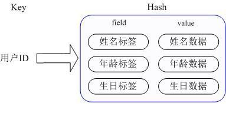

1. MySql+Memcached架构的问题
实际MySQL是适合进行海量数据存储的，通过Memcached将热点数据加载到cache，加速访问，很多公司都曾经使用过这样的架构，但随着业务数据量的不断增加，和访问量的持续增长，我们遇到了很多问题：
1.MySQL需要不断进行拆库拆表，Memcached也需不断跟着扩容，扩容和维护工作占据大量开发时间。
2.Memcached与MySQL数据库数据一致性问题。
3.Memcached数据命中率低或down机，大量访问直接穿透到DB，MySQL无法支撑。
4.跨机房cache同步问题。
众多NoSQL百花齐放，如何选择
最近几年，业界不断涌现出很多各种各样的NoSQL产品，那么如何才能正确地使用好这些产品，最大化地发挥其长处，是我们需要深入研究和思考的问题，实际归根结底最重要的是了解这些产品的定位，并且了解到每款产品的tradeoffs，在实际应用中做到扬长避短，总体上这些NoSQL主要用于解决以下几种问题
1.少量数据存储，高速读写访问。此类产品通过数据全部in-momery 的方式来保证高速访问，同时提供数据落地的功能，实际这正是Redis最主要的适用场景。
2.海量数据存储，分布式系统支持，数据一致性保证，方便的集群节点添加/删除。
3.这方面最具代表性的是dynamo和bigtable 2篇论文所阐述的思路。前者是一个完全无中心的设计，节点之间通过gossip方式传递集群信息，数据保证最终一致性，后者是一个中心化的方案设计，通过类似一个分布式锁服务来保证强一致性,数据写入先写内存和redo log，然后定期compat归并到磁盘上，将随机写优化为顺序写，提高写入性能。
4.Schema free，auto-sharding等。比如目前常见的一些文档数据库都是支持schema-free的，直接存储json格式数据，并且支持auto-sharding等功能，比如mongodb。
面对这些不同类型的NoSQL产品,我们需要根据我们的业务场景选择最合适的产品。
Redis最适合所有数据in-momory的场景，虽然Redis也提供持久化功能，但实际更多的是一个disk-backed的功能，跟传统意义上的持久化有比较大的差别，那么可能大家就会有疑问，似乎Redis更像一个加强版的Memcached，那么何时使用Memcached,何时使用Redis呢? 如果简单地比较Redis与Memcached的区别，大多数都会得到以下观点：
1 、Redis不仅仅支持简单的k/v类型的数据，同时还提供list，set，zset，hash等数据结构的存储。
2 、Redis支持数据的备份，即master-slave模式的数据备份。
3 、Redis支持数据的持久化，可以将内存中的数据保持在磁盘中，重启的时候可以再次加载进行使用。
2. Redis常用数据类型
Redis最为常用的数据类型主要有以下：String
Hash
List
Set
Sorted set
pub/sub
Transactions
在具体描述这几种数据类型之前，我们先通过一张图了解下Redis内部内存管理中是如何描述这些不同数据类型的：
首先Redis内部使用一个redisObject对象来表示所有的key和value,redisObject最主要的信息如上图所示：
type代表一个value对象具体是何种数据类型，
encoding是不同数据类型在redis内部的存储方式，
比如：type=string代表value存储的是一个普通字符串，那么对应的encoding可以是raw或者是int,如果是int则代表实际redis内部是按数值型类存储和表示这个字符串的，当然前提是这个字符串本身可以用数值表示，比如:”123” “456”这样的字符串。
这里需要特殊说明一下vm字段，只有打开了Redis的虚拟内存功能，此字段才会真正的分配内存，该功能默认是关闭状态的，该功能会在后面具体描述。
通过上图我们可以发现Redis使用redisObject来表示所有的key/value数据是比较浪费内存的，当然这些内存管理成本的付出主要也是为了给Redis不同数据类型提供一个统一的管理接口，实际作者也提供了多种方法帮助我们尽量节省内存使用，我们随后会具体讨论。
3. 各种数据类型应用和实现方式
下面我们先来逐一的分析下这7种数据类型的使用和内部实现方式:
String:Strings
数据结构是简单的key-value类型，value其实不仅是String，也可以是数字.常用命令: set,get,decr,incr,mget 等。
应用场景：String是最常用的一种数据类型，普通的key/ value 存储都可以归为此类.即可以完全实现目前 Memcached 的功能，并且效率更高。还可以享受Redis的定时持久化，操作日志及 Replication等功能。
除了提供与 Memcached 一样的get、set、incr、decr 等操作外，Redis还提供了下面一些操作：
获取字符串长度往字符串append内容
设置和获取字符串的某一段内容
设置及获取字符串的某一位（bit）
批量设置一系列字符串的内容
实现方式：
String在redis内部存储默认就是一个字符串，被redisObject所引用，当遇到incr,decr等操作时会转成数值型进行计算，此时redisObject的encoding字段为int。
Hash常用命令：hget,hset,hgetall 等。
应用场景：在Memcached中，我们经常将一些结构化的信息打包成HashMap，在客户端序列化后存储为一个字符串的值，比如用户的昵称、年龄、性别、积分等，这时候在需要修改其中某一项时，通常需要将所有值取出反序列化后，修改某一项的值，再序列化存储回去。这样不仅增大了开销，也不适用于一些可能并发操作的场合（比如两个并发的操作都需要修改积分）。而Redis的Hash结构可以使你像在数据库中Update一个属性一样只修改某一项属性值。
我们简单举个实例来描述下Hash的应用场景，比如我们要存储一个用户信息对象数据，包含以下信息：用户ID为查找的key，存储的value用户对象包含姓名，年龄，生日等信息，如果用普通的key/value结构来存储，主要有以下2种存储方式：
第一种方式将用户ID作为查找key,把其他信息封装成一个对象以序列化的方式存储，这种方式的缺点是，增加了序列化/反序列化的开销，并且在需要修改其中一项信息时，需要把整个对象取回，并且修改操作需要对并发进行保护，引入CAS等复杂问题。
第二种方法是这个用户信息对象有多少成员就存成多少个key-value对儿，用用户ID+对应属性的名称作为唯一标识来取得对应属性的值，虽然省去了序列化开销和并发问题，但是用户ID为重复存储，如果存在大量这样的数据，内存浪费还是非常可观的。那么Redis提供的Hash很好的解决了这个问题，Redis的Hash实际是内部存储的Value为一个HashMap，并提供了直接存取这个Map成员的接口，如下图：

也就是说，Key仍然是用户ID, value是一个Map，这个Map的key是成员的属性名，value是属性值，这样对数据的修改和存取都可以直接通过其内部Map的Key(Redis里称内部Map的key为field), 也就是通过 key(用户ID) + field(属性标签) 就可以操作对应属性数据了，既不需要重复存储数据，也不会带来序列化和并发修改控制的问题。很好的解决了问题。
这里同时需要注意，Redis提供了接口(hgetall)可以直接取到全部的属性数据,但是如果内部Map的成员很多，那么涉及到遍历整个内部Map的操作，由于Redis单线程模型的缘故，这个遍历操作可能会比较耗时，而另其它客户端的请求完全不响应，这点需要格外注意。
实现方式：上面已经说到Redis Hash对应Value内部实际就是一个HashMap，实际这里会有2种不同实现，这个Hash的成员比较少时Redis为了节省内存会采用类似一维数组的方式来紧凑存储，而不会采用真正的HashMap结构，对应的value redisObject的encoding为zipmap,当成员数量增大时会自动转成真正的HashMap,此时encoding为ht。
List常用命令：lpush,rpush,lpop,rpop,lrange等。
应用场景：Redis list的应用场景非常多，也是Redis最重要的数据结构之一，比如twitter的关注列表，粉丝列表等都可以用Redis的list结构来实现。
Lists 就是链表，相信略有数据结构知识的人都应该能理解其结构。使用Lists结构，我们可以轻松地实现最新消息排行等功能。Lists的另一个应用就是消息队列，可以利用Lists的PUSH操作，将任务存在Lists中，然后工作线程再用POP操作将任务取出进行执行。Redis还提供了操作Lists中某一段的api，你可以直接查询，删除Lists中某一段的元素。
实现方式：Redis list的实现为一个双向链表，即可以支持反向查找和遍历，更方便操作，不过带来了部分额外的内存开销，Redis内部的很多实现，包括发送缓冲队列等也都是用的这个数据结构。
Set常用命令：sadd,spop,smembers,sunion 等。
应用场景：Redis set对外提供的功能与list类似是一个列表的功能，特殊之处在于set是可以自动排重的，当你需要存储一个列表数据，又不希望出现重复数据时，set是一个很好的选择，并且set提供了判断某个成员是否在一个set集合内的重要接口，这个也是list所不能提供的。
Sets 集合的概念就是一堆不重复值的组合。利用Redis提供的Sets数据结构，可以存储一些集合性的数据，比如在微博应用中，可以将一个用户所有的关注人存在一个集合中，将其所有粉丝存在一个集合。
Redis还为集合提供了求交集、并集、差集等操作，可以非常方便的实现如共同关注、共同喜好、二度好友等功能，对上面的所有集合操作，你还可以使用不同的命令选择将结果返回给客户端还是存集到一个新的集合中。
实现方式：set 的内部实现是一个 value永远为null的HashMap，实际就是通过计算hash的方式来快速排重的，这也是set能提供判断一个成员是否在集合内的原因。
Sorted Set常用命令：zadd,zrange,zrem,zcard等
使用场景：Redis sorted set的使用场景与set类似，区别是set不是自动有序的，而sorted set可以通过用户额外提供一个优先级(score)的参数来为成员排序，并且是插入有序的，即自动排序。
当你需要一个有序的并且不重复的集合列表，那么可以选择sorted set数据结构，比如twitter 的public timeline可以以发表时间作为score来存储，这样获取时就是自动按时间排好序的。
另外还可以用Sorted Sets来做带权重的队列，比如普通消息的score为1，重要消息的score为2，然后工作线程可以选择按score的倒序来获取工作任务。让重要的任务优先执行。
实现方式：Redis sorted set的内部使用HashMap和跳跃表(SkipList)来保证数据的存储和有序，HashMap里放的是成员到score的映射，而跳跃表里存放的是所有的成员，排序依据是HashMap里存的score,使用跳跃表的结构可以获得比较高的查找效率，并且在实现上比较简单。
Pub/SubPub/Sub
从字面上理解就是发布（Publish）与订阅（Subscribe），在Redis中，你可以设定对某一个key值进行消息发布及消息订阅，当一个key值上进行了消息发布后，所有订阅它的客户端都会收到相应的消息。
这一功能最明显的用法就是用作实时消息系统，比如普通的即时聊天，群聊等功能。
Transactions
谁说NoSQL都不支持事务，虽然Redis的Transactions提供的并不是严格的ACID的事务（比如一串用EXEC提交执行的命令，在执行中服务器宕机，那么会有一部分命令执行了，剩下的没执行），但是这个Transactions还是提供了基本的命令打包执行的功能（在服务器不出问题的情况下，可以保证一连串的命令是顺序在一起执行的，中间有会有其它客户端命令插进来执行）。
Redis还提供了一个Watch功能，你可以对一个key进行Watch，然后再执行Transactions，在这过程中，如果这个Watched的值进行了修改，那么这个Transactions会发现并拒绝执行。
4. Redis实际应用场景
Redis在很多方面与其他数据库解决方案不同：它使用内存提供主存储支持，而仅使用硬盘做持久性的存储；
它的数据模型非常独特，用的是单线程。另一个大区别在于，你可以在开发环境中使用Redis的功能，但却不需要转到Redis。转向Redis当然也是可取的，许多开发者从一开始就把Redis作为首选数据库；但设想如果你的开发环境已经搭建好，应用已经在上面运行了，那么更换数据库框架显然不那么容易。另外在一些需要大容量数据集的应用，Redis也并不适合，因为它的数据集不会超过系统可用的内存。所以如果你有大数据应用，而且主要是读取访问模式，那么Redis并不是正确的选择。
然而我喜欢Redis的一点就是你可以把它融入到你的系统中来，这就能够解决很多问题，比如那些你现有的数据库处理起来感到缓慢的任务。这些你就可以通过Redis来进行优化，或者为应用创建些新的功能。在本文中，我就想探讨一些怎样将Redis加入到现有的环境中，并利用它的原语命令等功能来解决 传统环境中碰到的一些常见问题。
在这些例子中，Redis都不是作为首选数据库。
1、显示最新的项目列表
下面这个语句常用来显示最新项目，随着数据多了，查询毫无疑问会越来越慢。
1 | SELECT * FROM foo WHERE ... ORDER BY time DESC LIMIT 10 |
在Web应用中，“列出最新的回复”之类的查询非常普遍，这通常会带来可扩展性问题。这令人沮丧，因为项目本来就是按这个顺序被创建的，但要输出这个顺序却不得不进行排序操作。
类似的问题就可以用Redis来解决。比如说，我们的一个Web应用想要列出用户贴出的最新20条评论。在最新的评论边上我们有一个“显示全部”的链接，点击后就可以获得更多的评论。
我们假设数据库中的每条评论都有一个唯一的递增的ID字段。
我们可以使用分页来制作主页和评论页，使用Redis的模板，每次新评论发表时，我们会将它的ID添加到一个Redis列表：1
LPUSH latest.comments <ID>
我们将列表裁剪为指定长度，因此Redis只需要保存最新的5000条评论：
1 | LTRIM latest.comments 0 5000 |
每次我们需要获取最新评论的项目范围时，我们调用一个函数来完成（使用伪代码）：
1 | FUNCTION get_latest_comments(start, num_items): |
这里我们做的很简单。在Redis中我们的最新ID使用了常驻缓存，这是一直更新的。但是我们做了限制不能超过5000个ID，因此我们的获取ID函数会一直询问Redis。只有在start/count参数超出了这个范围的时候，才需要去访问数据库。
我们的系统不会像传统方式那样“刷新”缓存，Redis实例中的信息永远是一致的。SQL数据库（或是硬盘上的其他类型数据库）只是在用户需要获取“很远”的数据时才会被触发，而主页或第一个评论页是不会麻烦到硬盘上的数据库了。
2、删除与过滤
我们可以使用LREM来删除评论。如果删除操作非常少，另一个选择是直接跳过评论条目的入口，报告说该评论已经不存在。
有些时候你想要给不同的列表附加上不同的过滤器。如果过滤器的数量受到限制，你可以简单的为每个不同的过滤器使用不同的Redis列表。毕竟每个列表只有5000条项目，但Redis却能够使用非常少的内存来处理几百万条项目。
3、排行榜相关
另一个很普遍的需求是各种数据库的数据并非存储在内存中，因此在按得分排序以及实时更新这些几乎每秒钟都需要更新的功能上数据库的性能不够理想。 典型的比如那些在线游戏的排行榜，比如一个Facebook的游戏，根据得分你通常想要：
列出前100名高分选手
列出某用户当前的全球排名
这些操作对于Redis来说小菜一碟，即使你有几百万个用户，每分钟都会有几百万个新的得分。
模式是这样的，每次获得新得分时，我们用这样的代码：1
ZADD leaderboard <score> <username>
你可能用userID来取代username，这取决于你是怎么设计的。 得到前100名高分用户很简单：1
ZREVRANGE leaderboard 0 99
用户的全球排名也相似，只需要：1
ZRANK leaderboard <username>
4、按照用户投票和时间排序
排行榜的一种常见变体模式就像Reddit或Hacker News用的那样，新闻按照类似下面的公式根据得分来排序：
score = points / time^alpha
因此用户的投票会相应的把新闻挖出来，但时间会按照一定的指数将新闻埋下去。下面是我们的模式，当然算法由你决定。
模式是这样的，开始时先观察那些可能是最新的项目，例如首页上的1000条新闻都是候选者，因此我们先忽视掉其他的，这实现起来很简单。
每次新的新闻贴上来后，我们将ID添加到列表中，使用LPUSH + LTRIM，确保只取出最新的1000条项目。
有一项后台任务获取这个列表，并且持续的计算这1000条新闻中每条新闻的最终得分。计算结果由ZADD命令按照新的顺序填充生成列表，老新闻则被清除。这里的关键思路是排序工作是由后台任务来完成的。
5、处理过期项目
另一种常用的项目排序是按照时间排序。我们使用unix时间作为得分即可。
模式如下：
每次有新项目添加到我们的非Redis数据库时，我们把它加入到排序集合中。这时我们用的是时间属性，current_time和time_to_live。
另一项后台任务使用ZRANGE…SCORES查询排序集合，取出最新的10个项目。如果发现unix时间已经过期，则在数据库中删除条目。
6、计数
Redis是一个很好的计数器，这要感谢INCRBY和其他相似命令。
我相信你曾许多次想要给数据库加上新的计数器，用来获取统计或显示新信息，但是最后却由于写入敏感而不得不放弃它们。
好了，现在使用Redis就不需要再担心了。有了原子递增（atomic increment），你可以放心的加上各种计数，用GETSET重置，或者是让它们过期。 例如这样操作：1
INCR user:<id> EXPIRE user:<id> 60
你可以计算出最近用户在页面间停顿不超过60秒的页面浏览量，当计数达到比如20时，就可以显示出某些条幅提示，或是其它你想显示的东西。
7、特定时间内的特定项目
另一项对于其他数据库很难，但Redis做起来却轻而易举的事就是统计在某段特点时间里有多少特定用户访问了某个特定资源。比如我想要知道某些特定的注册用户或IP地址，他们到底有多少访问了某篇文章。
每次我获得一次新的页面浏览时我只需要这样做：1
SADD page:day1:<page_id> <user_id>
当然你可能想用unix时间替换day1，比如time()-(time()%3600*24)等等。
想知道特定用户的数量吗？只需要使用1
SCARD page:day1:<page_id>
需要测试某个特定用户是否访问了这个页面？1
SISMEMBER page:day1:<page_id>
8、实时分析正在发生的情况
用于数据统计与防止垃圾邮件等 我们只做了几个例子，但如果你研究Redis的命令集，并且组合一下，就能获得大量的实时分析方法，有效而且非常省力。使用Redis原语命令，更容易实施垃圾邮件过滤系统或其他实时跟踪系统。
9、Pub/Sub
Redis的Pub/Sub非常非常简单，运行稳定并且快速。支持模式匹配，能够实时订阅与取消频道。
10、队列
你应该已经注意到像list push和list pop这样的Redis命令能够很方便的执行队列操作了，但能做的可不止这些：比如Redis还有list pop的变体命令，能够在列表为空时阻塞队列。
现代的互联网应用大量地使用了消息队列（Messaging）。消息队列不仅被用于系统内部组件之间的通信，同时也被用于系统跟其它服务之间的交互。
消息队列的使用可以增加系统的可扩展性、灵活性和用户体验。
非基于消息队列的系统，其运行速度取决于系统中最慢的组件的速度（注：短板效应）。而基于消息队列可以将系统中各组件解除耦合，这样系统就不再受最慢组件的束缚，各组件可以异步运行从而得以更快的速度完成各自的工作。
此外，当服务器处在高并发操作的时候，比如频繁地写入日志文件。可以利用消息队列实现异步处理。从而实现高性能的并发操作。
11、缓存
Redis的缓存部分值得写一篇新文章，我这里只是简单的说一下。Redis能够替代memcached，让你的缓存从只能存储数据变得能够更新数据，因此你不再需要每次都重新生成数据了。
数据持久化支持
Redis虽然是基于内存的存储系统，但是它本身是支持内存数据的持久化的，而且提供两种主要的持久化策略：RDB快照和AOF日志。
而memcached是不支持数据持久化操作的。
1）RDB快照
Redis支持将当前数据的快照存成一个数据文件的持久化机制，即RDB快照。但是一个持续写入的数据库如何生成快照呢？
Redis借助了fork命令的copy on write机制。在生成快照时，将当前进程fork出一个子进程，然后在子进程中循环所有的数据，将数据写成为RDB文件。
我们可以通过Redis的save指令来配置RDB快照生成的时机，比如配置10分钟就生成快照，也可以配置有1000次写入就生成快照，也可以多个规则一起实施。
这些规则的定义就在Redis的配置文件中，你也可以通过Redis的CONFIG SET命令在Redis运行时设置规则，不需要重启Redis。
Redis的RDB文件不会坏掉，因为其写操作是在一个新进程中进行的，当生成一个新的RDB文件时，Redis生成的子进程会先将数据写到一个临时文件中，然后通过原子性rename系统调用将临时文件重命名为RDB文件，这样在任何时候出现故障，Redis的RDB文件都总是可用的。
同时，Redis的RDB文件也是Redis主从同步内部实现中的一环。RDB有他的不足，就是一旦数据库出现问题，那么我们的RDB文件中保存的数据并不是全新的，从上次RDB文件生成到Redis停机这段时间的数据全部丢掉了。在某些业务下，这是可以忍受的。
2）AOF日志
AOF日志的全称是append only file，它是一个追加写入的日志文件。与一般数据库的binlog不同的是，AOF文件是可识别的纯文本，它的内容就是一个个的Redis标准命令。只有那些会导致数据发生修改的命令才会追加到AOF文件。每一条修改数据的命令都生成一条日志。
AOF文件会越来越大，所以Redis又提供了一个功能，叫做AOF rewrite。其功能就是重新生成一份AOF文件，新的AOF文件中一条记录的操作只会有一次，而不像一份老文件那样，可能记录了对同一个值的多次操作。其生成过程和RDB类似，也是fork一个进程，直接遍历数据，写入新的AOF临时文件。
在写入新文件的过程中，所有的写操作日志还是会写到原来老的AOF文件中，同时还会记录在内存缓冲区中。当重完操作完成后，会将所有缓冲区中的日志一次性写入到临时文件中。然后调用原子性的rename命令用新的AOF文件取代老的AOF文件。
AOF是一个写文件操作，其目的是将操作日志写到磁盘上，所以它也同样会遇到我们上面说的写操作的流程。在Redis中对AOF调用write写入后，通过appendfsync选项来控制调用fsync将其写到磁盘上的时间，下面appendfsync的三个设置项，安全强度逐渐变强。
appendfsync no
当设置appendfsync为no的时候，Redis不会主动调用fsync去将AOF日志内容同步到磁盘，所以这一切就完全依赖于操作系统的调试了。对大多数Linux操作系统，是每30秒进行一次fsync，将缓冲区中的数据写到磁盘上。
appendfsync everysec
当设置appendfsync为everysec的时候，Redis会默认每隔一秒进行一次fsync调用，将缓冲区中的数据写到磁盘。但是当这一次的fsync调用时长超过1秒时。Redis会采取延迟fsync的策略，再等一秒钟。也就是在两秒后再进行fsync，这一次的fsync就不管会执行多长时间都会进行。这时候由于在fsync时文件描述符会被阻塞，所以当前的写操作就会阻塞。
所以结论就是，在绝大多数情况下，Redis会每隔一秒进行一次fsync。在最坏的情况下，两秒钟会进行一次fsync操作。这一操作在大多数数据库系统中被称为group commit，就是组合多次写操作的数据，一次性将日志写到磁盘。
appednfsync always
当设置appendfsync为always时，每一次写操作都会调用一次fsync，这时数据是最安全的，当然，由于每次都会执行fsync，所以其性能也会受到影响。
对于一般性的业务需求，建议使用RDB的方式进行持久化，原因是RDB的开销并相比AOF日志要低很多，对于那些无法忍数据丢失的应用，建议使用AOF日志。
集群管理的不同
Memcached是全内存的数据缓冲系统，Redis虽然支持数据的持久化，但是全内存毕竟才是其高性能的本质。
作为基于内存的存储系统来说，机器物理内存的大小就是系统能够容纳的最大数据量。如果需要处理的数据量超过了单台机器的物理内存大小，就需要构建分布式集群来扩展存储能力。
Memcached本身并不支持分布式，因此只能在客户端通过像一致性哈希这样的分布式算法来实现Memcached的分布式存储。
当客户端向Memcached集群发送数据之前，首先会通过内置的分布式算法计算出该条数据的目标节点，然后数据会直接发送到该节点上存储。但客户端查询数据时，同样要计算出查询数据所在的节点，然后直接向该节点发送查询请求以获取数据。
相较于Memcached只能采用客户端实现分布式存储，Redis更偏向于在服务器端构建分布式存储。最新版本的Redis已经支持了分布式存储功能。
Redis Cluster是一个实现了分布式且允许单点故障的Redis高级版本，它没有中心节点，具有线性可伸缩的功能。
Redis Cluster将整个key的数值域分成4096个哈希槽，每个节点上可以存储一个或多个哈希槽，也就是说当前Redis
Cluster支持的最大节点数就是4096。
Redis Cluster使用的分布式算法也很简单：crc16( key ) % HASH_SLOTS_NUMBER。
为了保证单点故障下的数据可用性，Redis Cluster引入了Master节点和Slave节点。
在Redis Cluster中，每个Master节点都会有对应的两个用于冗余的Slave节点。
这样在整个集群中，任意两个节点的宕机都不会导致数据的不可用。当Master节点退出后，集群会自动选择一个Slave节点成为新的Master节点。